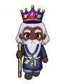

Wiki › Missões › ✨ A bola da final
✨ A bola da final
Nível 710 Copa dos Esquecidos 🌀 Estádio do Multiverso

A história
A final da Copa de Origem parou quando a primeira bola do universo se partiu. O Grão-Guardião Orbitto conhece essa bola. Conte para ele, no Estádio do Multiverso!
O que fazer
🎯 Fale com o Grão-Guardião Orbitto (Estádio do Multiverso)
- Fale com

Grão-Guardião Orbitto
📍 Onde achar e como chegar
🙋Procure: Grão-Guardião Orbitto
🗺️Onde: 🌀 Estádio do Multiverso
🧭Viagem: 🌀 No Rio de Janeiro, fale com o Guardião do Multiverso.
🧭Caminho: a viagem já deixa você lá.
📌Lá dentro: embaixo no mapa (sul)
Recompensas
- ⭐ 78.363.877 XP
- 🪙 2.130.000 tostões
- 2x
 Ingresso Esquecido
Ingresso Esquecido
⬅️ Antes, faça: 🎟️ A torcedora mais antiga